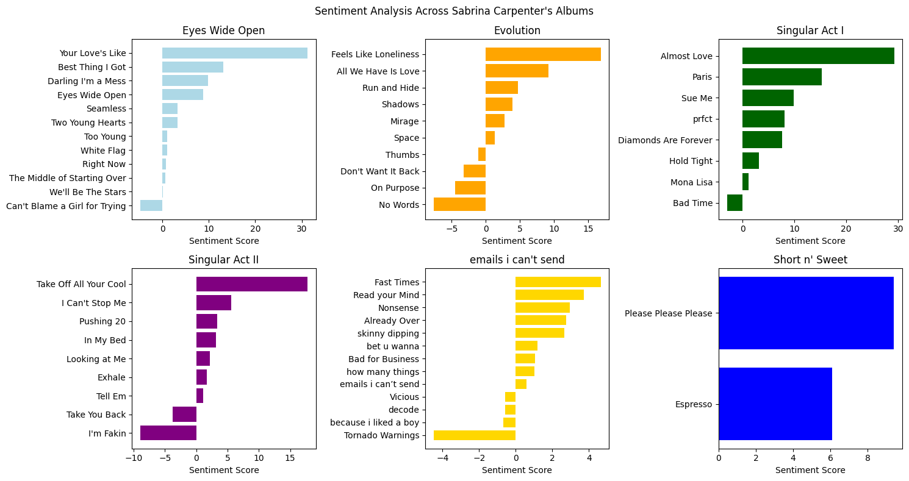

Sabrina Carpenter, now a top 10 Spotify artist with nearly 80 million monthly listeners, has built her music career steadily since her debut in 2015. Fascinated by her journey, I investigated the evolution of sentiment in her song lyrics to understand if changes in sentiment correlate with her rising popularity. This analysis explores the relationship between lyrical sentiment and streaming numbers and predicts the sentiment of her upcoming sixth studio album, Short n’ Sweet. The research focuses on how Carpenter’s lyrical sentiment has changed over time and how it relates to streaming patterns, as well as what can be anticipated about the sentiment of her new album based on previous data and current releases.
Author
Emily Nham
Published
August 5, 2024
Modified
August 5, 2024
Unveiling the Evolution: Analyzing the Lyrical Sentiment and Streaming Patterns in Sabrina Carpenter’s Career
By Emily Nham
August 5, 2024
Introduction
Earning a spot in Spotify’s top 10 artists in the world, Sabrina Carpenter has become increasingly popular this year with almost 80 million monthly listeners. However, her rise to fame in the music industry was nothing close to an overnight sensation. From releasing her first album as a star on the Disney Channel back in 2015 to releasing a now-certified gold album, emails i can’t send, in 2022, Carpenter has had a steady pathway to success as a pop star.
Having been one of my favorite artists since the start of her career, I decided to dive deeper into her journey as a musical artist. In particular, I was interested in analyzing the sentiment of her songs’ lyrics. I wanted to determine if there are any notable changes in the features of her lyrics now that she holds a well-known name in pop culture. To investigate whether the sentiment of her lyrics influenced her growing fame—or vice versa—I examined how the sentiment levels in her songs might correlate with their streaming numbers. Based on this analysis, I made a prediction about the lyrical sentiment of her upcoming sixth studio album, Short n’ Sweet.
Research Question: How has the sentiment of Sabrina Carpenter’s lyrics evolved throughout her musical career, and what patterns are observable in relation to songs’ streaming numbers? Additionally, based on previous song statistics and the currently released tracks from her upcoming album, what can be anticipated about the sentiment of this new album?
Using the data sources below, I visualized the relationship between Carpenter’s lyrical sentiment and stream counts, aiming to determine if there is a direct correlation with her success. With this information, I made predictions about the sentiment of her upcoming album, Short n’ Sweet.
Note: All comments made was based on the data as of August 5, 2024. However, running the Python notebook will always obtain the most up-to-date data from the sources.
Lyrical Data Collection
The lyrical data used in this project was collected from Lyrics.com, an online music community containing a large collection of song lyrics, album information, and video clips. Lyrics.com is a collaborative platform that relies on volunteer editors to contribute lyrics and related information.
This website was chosen because it is one of the top lyric websites that organizes its lyrics by artist and album, which allows a more systematic method to retrieve lyric data. Additionally, scraping the lyrical data was most accessible on Lyrics.com as opposed to another lyric website, Genius, which had extra protection against robots. As a bonus, Lyrics.com also does not label song structure (such as verse, chorus, and bridge), preventing the need to take that into account when cleaning the data.
Focusing on Sabrina Carpenter, data was found through her artist page on Lyrics.com. However, as some individual songs were labeled as albums on her album page, each album page URL was specified manually. Then, data from each song listed on the album page was collected systematically. Consequently, when new music gets released, or if other artists are to be analyzed, it would be simple to collect the new lyric data.
import requestsfrom bs4 import BeautifulSoupimport nltkimport matplotlib.pyplot as pltimport pandas as pdimport numpy as npfrom nltk.tokenize import word_tokenizefrom nltk.sentiment import vaderfrom nltk.corpus import stopwordsnltk.download('punkt')nltk.download('stopwords')nltk.download('vader_lexicon')# Mock user agent to allow web scrapingHEADERS = {'User-Agent': 'Mozilla/5.0 (iPad; CPU OS 12_2 like Mac OS X) AppleWebKit/605.1.15 (KHTML, like Gecko) Mobile/15E148'}
[nltk_data] Downloading package punkt to /root/nltk_data...
[nltk_data] Unzipping tokenizers/punkt.zip.
[nltk_data] Downloading package stopwords to /root/nltk_data...
[nltk_data] Unzipping corpora/stopwords.zip.
[nltk_data] Downloading package vader_lexicon to /root/nltk_data...
def get_album_songs(album_url): response = requests.get(album_url, headers=HEADERS) html_string = response.text document = BeautifulSoup(html_string, "html.parser") strong_tags = document.find("tbody").find_all("strong") song_list = [] song_url_list = []for strong_tag in strong_tags:# Save song name song_list.append(strong_tag.text)# Save song URL a_tag = strong_tag.find_all("a") song_url_list.append('https://www.lyrics.com'+ a_tag[0]['href'])return song_list, song_url_list
# Get list of songs and song URLS from albumeyes_wide_open_songs, eyes_wide_open_song_URLs = get_album_songs('https://www.lyrics.com/album/3191389/Eyes-Wide-Open')evolution_songs, evolution_song_URLs = get_album_songs('https://www.lyrics.com/album/3402229/Evolution')singular_act_1_songs, singular_act_1_song_URLs = get_album_songs('https://www.lyrics.com/album/3748714/Singular%3A-Act-I')singular_act_2_songs, singular_act_2_song_URLs = get_album_songs('https://www.lyrics.com/album/3858352/Singular%3A-Act-II')# Must do emails i can't send album manually because website doesn't have album pageeics_songs = ["emails i can’t send", "Vicious", "Read your Mind", "Tornado Warnings", "because i liked a boy", "Already Over", "how many things", "bet u wanna", "Nonsense", "Fast Times", "skinny dipping", "Bad for Business", "decode"]eics_song_URLs = ['https://www.lyrics.com/lyric-lf/8125109/Sabrina+Carpenter/emails+i+can%27t+send', 'https://www.lyrics.com/lyric-lf/8065909/Sabrina+Carpenter/Vicious', 'https://www.lyrics.com/lyric-lf/8125116/Sabrina+Carpenter/Read+your+Mind', 'https://www.lyrics.com/lyric-lf/8125124/Sabrina+Carpenter/Tornado+Warnings', 'https://www.lyrics.com/lyric-lf/8125128/Sabrina+Carpenter/because+i+liked+a+boy', 'https://www.lyrics.com/lyric-lf/8125129/Sabrina+Carpenter/Already+Over', 'https://www.lyrics.com/lyric-lf/8125131/Sabrina+Carpenter/how+many+things', 'https://www.lyrics.com/lyric-lf/8125134/Sabrina+Carpenter/bet+u+wanna', 'https://www.lyrics.com/lyric-lf/8125137/Sabrina+Carpenter/Nonsense', 'https://www.lyrics.com/lyric-lf/7271990/Sabrina+Carpenter/Fast+Times', 'https://www.lyrics.com/lyric/38910770/Sabrina+Carpenter/Skinny+Dipping', 'https://www.lyrics.com/lyric-lf/8125139/Sabrina+Carpenter/Bad+for+Business', 'https://www.lyrics.com/lyric-lf/8125142/Sabrina+Carpenter/decode']# Must do upcoming Short n' Sweet album manually because not yet released (only 2 songs)sns_songs = ["Please Please Please", "Espresso"]sns_song_URLs = ['https://www.lyrics.com/lyric-lf/14865368/Sabrina+Carpenter/Please+Please+Please', 'https://www.lyrics.com/lyric-lf/14120050/Sabrina+Carpenter/Espresso']# Add missing song title and URL ("The Middle of Starting Over") to appropriate listseyes_wide_open_songs.insert(2, "The Middle of Starting Over")eyes_wide_open_song_URLs.insert(2, 'https://www.lyrics.com/sublyric/4576/Sabrina+Carpenter/The+Middle+of+Starting+Over')# List of album namessc_albums = ["Eyes Wide Open", "Evolution", "Singular Act I", "Singular Act II", "emails i can't send", "Short n' Sweet"]
# Store lyrics for each song in each album in a corresponding listeyes_wide_open_songs_lyrics = []for song_URL in eyes_wide_open_song_URLs: eyes_wide_open_songs_lyrics.append(get_song_lyrics(song_URL))evolution_songs_lyrics = []for song_URL in evolution_song_URLs: evolution_songs_lyrics.append(get_song_lyrics(song_URL))singular_act_1_songs_lyrics = []for song_URL in singular_act_1_song_URLs: singular_act_1_songs_lyrics.append(get_song_lyrics(song_URL))singular_act_2_songs_lyrics = []for song_URL in singular_act_2_song_URLs: singular_act_2_songs_lyrics.append(get_song_lyrics(song_URL))eics_songs_lyrics = []for song_URL in eics_song_URLs: eics_songs_lyrics.append(get_song_lyrics(song_URL))sns_songs_lyrics = []for song_URL in sns_song_URLs: sns_songs_lyrics.append(get_song_lyrics(song_URL))
# DATA PROCESSING: Obtain stopwords and sentiment analyzerstop_words = stopwords.words('english')sia = vader.SentimentIntensityAnalyzer()
# Adding the exact polarity score determined by SIA.def get_song_sentiment(song_lyrics): song_words = word_tokenize(song_lyrics) song_sentiment_score =0for word in song_words:if word notin stop_words: # check that word isn't a stopword score = sia.polarity_scores(word)['compound'] song_sentiment_score += scorereturn song_sentiment_score
# Get sentiment scores for each song in each album and order the lists from positive to negative sentiment# Eyes Wide Openeyes_wide_open_sentiment_scores = []for song in eyes_wide_open_songs_lyrics: eyes_wide_open_sentiment_scores.append(get_song_sentiment(song))ordered_eyes_wide_open_songs = [songs for _,songs insorted(zip(eyes_wide_open_sentiment_scores, eyes_wide_open_songs))]ordered_eyes_wide_open_sentiment_scores =sorted(eyes_wide_open_sentiment_scores)# Evolutionevolution_sentiment_scores = []for song in evolution_songs_lyrics: evolution_sentiment_scores.append(get_song_sentiment(song))ordered_evolution_songs = [songs for _,songs insorted(zip(evolution_sentiment_scores, evolution_songs))]ordered_evolution_sentiment_scores =sorted(evolution_sentiment_scores)# Singular Act Isingular_act_1_sentiment_scores = []for song in singular_act_1_songs_lyrics: singular_act_1_sentiment_scores.append(get_song_sentiment(song))ordered_singular_act_1_songs = [songs for _,songs insorted(zip(singular_act_1_sentiment_scores, singular_act_1_songs))]ordered_singular_act_1_sentiment_scores =sorted(singular_act_1_sentiment_scores)# Singular Act IIsingular_act_2_sentiment_scores = []for song in singular_act_2_songs_lyrics: singular_act_2_sentiment_scores.append(get_song_sentiment(song))ordered_singular_act_2_songs = [songs for _,songs insorted(zip(singular_act_2_sentiment_scores, singular_act_2_songs))]ordered_singular_act_2_sentiment_scores =sorted(singular_act_2_sentiment_scores)# emails i can't sendeics_sentiment_scores = []for song in eics_songs_lyrics: eics_sentiment_scores.append(get_song_sentiment(song))ordered_eics_songs = [songs for _,songs insorted(zip(eics_sentiment_scores, eics_songs))]ordered_eics_sentiment_scores =sorted(eics_sentiment_scores)# Short n' Sweetsns_sentiment_scores = []for song in sns_songs_lyrics: sns_sentiment_scores.append(get_song_sentiment(song))ordered_sns_songs = [songs for _,songs insorted(zip(sns_sentiment_scores, sns_songs))]ordered_sns_sentiment_scores =sorted(sns_sentiment_scores)
Streaming Data
As a way to measure the effect of her lyrical sentiment, I used the total number of streams recorded on Spotify for each song. To collect this streaming data, I used kworb.net, a website containing music-related data. This website was used because Spotify does not offer a straightforward way to retrieve the total number of plays for a track. As this site collects updated relevant data in a simple format for web scraping, I used kworb.net as an alternative to directly obtaining information from Spotify.
Carpenter’s Spotify Top Songs page on kworb.net contains a table ordering all her songs by total number of streams, with the most streamed track at the top. The table also specifies the daily number of streams for each track. Songs that Carpenter is featured in are marked with an asterisk in the title, although this is not a problem as this research focuses on Carpenter’s own songs.
# Get streaming datastreams_table = pd.read_html('https://kworb.net/spotify/artist/74KM79TiuVKeVCqs8QtB0B_songs.html', match="Song Title") # extract table with streams per songstreams_df = streams_table[0]
# Create dictionary to map song title to lyrics to easily add to dataframedef map_title_to_lyrics(song_titles_list, song_lyrics_list): songs_to_lyrics = {t:l for (t, l) inzip(song_titles_list, song_lyrics_list)}return songs_to_lyrics# Merges dict1 into dict2 (modifies dict 2)def merge_dicts(dict1, dict2): dict2.update(dict1)return
# Map each album's songs to lyrics and combine them into one large dicteyes_wide_open_dict = map_title_to_lyrics(eyes_wide_open_songs, eyes_wide_open_songs_lyrics)evolution_dict = map_title_to_lyrics(evolution_songs, evolution_songs_lyrics)singular_act_1_dict = map_title_to_lyrics(singular_act_1_songs, singular_act_1_songs_lyrics)singular_act_2_dict = map_title_to_lyrics(singular_act_2_songs, singular_act_2_songs_lyrics)eics_dict = map_title_to_lyrics(eics_songs, eics_songs_lyrics)sns_dict = map_title_to_lyrics(sns_songs, sns_songs_lyrics)sc_songs_to_lyrics = {}merge_dicts(eyes_wide_open_dict, sc_songs_to_lyrics)merge_dicts(evolution_dict, sc_songs_to_lyrics)merge_dicts(singular_act_1_dict, sc_songs_to_lyrics)merge_dicts(singular_act_2_dict, sc_songs_to_lyrics)merge_dicts(eics_dict, sc_songs_to_lyrics)merge_dicts(sns_dict, sc_songs_to_lyrics)
# Map each album's songs to its sentiment and combine them info one large dicteyes_wide_open_dict = map_title_to_lyrics(eyes_wide_open_songs, eyes_wide_open_sentiment_scores)evolution_dict = map_title_to_lyrics(evolution_songs, evolution_sentiment_scores)singular_act_1_dict = map_title_to_lyrics(singular_act_1_songs, singular_act_1_sentiment_scores)singular_act_2_dict = map_title_to_lyrics(singular_act_2_songs, singular_act_2_sentiment_scores)eics_dict = map_title_to_lyrics(eics_songs, eics_sentiment_scores)sns_dict = map_title_to_lyrics(sns_songs, sns_sentiment_scores)sc_songs_to_sentiment_score = {}merge_dicts(eyes_wide_open_dict, sc_songs_to_sentiment_score)merge_dicts(evolution_dict, sc_songs_to_sentiment_score)merge_dicts(singular_act_1_dict, sc_songs_to_sentiment_score)merge_dicts(singular_act_2_dict, sc_songs_to_sentiment_score)merge_dicts(eics_dict, sc_songs_to_sentiment_score)merge_dicts(sns_dict, sc_songs_to_sentiment_score)
# Map each song to its album and combine them info one large dicteyes_wide_open_dict = {k: "Eyes Wide Open"for k in eyes_wide_open_songs}evolution_dict = {k: "Evolution"for k in evolution_songs}singular_act_1_dict = {k: "Singular Act I"for k in singular_act_1_songs}singular_act_2_dict = {k: "Singular Act II"for k in singular_act_2_songs}eics_dict = {k: "emails i can’t send"for k in eics_songs}sns_dict = {k: "Short n' Sweet"for k in sns_songs}sc_songs_to_album = {}merge_dicts(eyes_wide_open_dict, sc_songs_to_album)merge_dicts(evolution_dict, sc_songs_to_album)merge_dicts(singular_act_1_dict, sc_songs_to_album)merge_dicts(singular_act_2_dict, sc_songs_to_album)merge_dicts(eics_dict, sc_songs_to_album)merge_dicts(sns_dict, sc_songs_to_album)
# Add lyrics column to streams dataframestreams_df['Lyrics'] = streams_df['Song Title'].map(sc_songs_to_lyrics)# Add sentiment column to streams dataframestreams_df['Sentiment Score'] = streams_df['Song Title'].map(sc_songs_to_sentiment_score)# Add album column to streams dataframestreams_df['Album'] = streams_df['Song Title'].map(sc_songs_to_album)# Clean dataframe by removing songs that we're not interested incleaned_streams_df1 = streams_df.dropna(subset=['Lyrics'])# Drop duplicate 'Almost Love' songcleaned_streams_df = cleaned_streams_df1.drop_duplicates(subset=['Song Title'])
Results and Discussion
To gain a clearer understanding of the sentiment across Carpenter’s albums, I plotted the sentiment scores for each song in a bar graph, grouped by album and arranged from the most to least positive (Figure 6). The analysis reveals that, overall, most of Carpenter’s songs exhibit a positive sentiment according to Vader’s Sentiment Intensity Analyzer (SIA). However, each album contains at least one song with a negative sentiment score.
# Make horizontal bar plots of sentiments for each albumfigure, axis = plt.subplots(2, 3, figsize=(15, 8))axis[0][0].barh(ordered_eyes_wide_open_songs, ordered_eyes_wide_open_sentiment_scores, color="lightblue")axis[0][0].set_title("Eyes Wide Open")axis[0][0].set_xlabel("Sentiment Score")axis[0][1].barh(ordered_evolution_songs, ordered_evolution_sentiment_scores, color="orange")axis[0][1].set_title("Evolution")axis[0][1].set_xlabel("Sentiment Score")axis[0][2].barh(ordered_singular_act_1_songs, ordered_singular_act_1_sentiment_scores, color="darkgreen")axis[0][2].set_title("Singular Act I")axis[0][2].set_xlabel("Sentiment Score")axis[1][0].barh(ordered_singular_act_2_songs, ordered_singular_act_2_sentiment_scores, color="purple")axis[1][0].set_title("Singular Act II")axis[1][0].set_xlabel("Sentiment Score")axis[1][1].barh(ordered_eics_songs, ordered_eics_sentiment_scores, color="gold")axis[1][1].set_title("emails i can't send")axis[1][1].set_xlabel("Sentiment Score")axis[1][2].barh(ordered_sns_songs, ordered_sns_sentiment_scores, color="blue")axis[1][2].set_title("Short n' Sweet")axis[1][2].set_xlabel("Sentiment Score")plt.suptitle("Sentiment Analysis Across Sabrina Carpenter's Albums")plt.tight_layout()

Figure 6. Bar Graph of Sentiment Scores Across Carpenter’s Song, By Album
Additionally, there is a loose trend in the magnitude of sentiment across songs in Carpenter’s albums. Looking closely at the x-axis labels, it appears that in her earlier albums, Carpenter’s “positive” songs generally have stronger sentiment magnitudes. However, in her most recent albums, Singular Act II and emails I can’t send, the sentiment scores for most, if not all, songs fall within a narrower range of approximately -5 to 5. This smaller range of sentiment scores may not necessarily indicate more “neutral” songs but rather may reflect a more nuanced approach to songwriting, where strong sentiment words balance each other out.
# Install altair for interactive data visualizations!pip install -U altair!pip install lxmlimport altair as alt
Requirement already satisfied: altair in /usr/local/lib/python3.10/dist-packages (5.3.0)
Requirement already satisfied: jinja2 in /usr/local/lib/python3.10/dist-packages (from altair) (3.1.4)
Requirement already satisfied: jsonschema>=3.0 in /usr/local/lib/python3.10/dist-packages (from altair) (4.23.0)
Requirement already satisfied: numpy in /usr/local/lib/python3.10/dist-packages (from altair) (1.26.4)
Requirement already satisfied: packaging in /usr/local/lib/python3.10/dist-packages (from altair) (24.1)
Requirement already satisfied: pandas>=0.25 in /usr/local/lib/python3.10/dist-packages (from altair) (2.1.4)
Requirement already satisfied: toolz in /usr/local/lib/python3.10/dist-packages (from altair) (0.12.1)
Requirement already satisfied: typing-extensions>=4.0.1 in /usr/local/lib/python3.10/dist-packages (from altair) (4.12.2)
Requirement already satisfied: attrs>=22.2.0 in /usr/local/lib/python3.10/dist-packages (from jsonschema>=3.0->altair) (23.2.0)
Requirement already satisfied: jsonschema-specifications>=2023.03.6 in /usr/local/lib/python3.10/dist-packages (from jsonschema>=3.0->altair) (2023.12.1)
Requirement already satisfied: referencing>=0.28.4 in /usr/local/lib/python3.10/dist-packages (from jsonschema>=3.0->altair) (0.35.1)
Requirement already satisfied: rpds-py>=0.7.1 in /usr/local/lib/python3.10/dist-packages (from jsonschema>=3.0->altair) (0.19.1)
Requirement already satisfied: python-dateutil>=2.8.2 in /usr/local/lib/python3.10/dist-packages (from pandas>=0.25->altair) (2.8.2)
Requirement already satisfied: pytz>=2020.1 in /usr/local/lib/python3.10/dist-packages (from pandas>=0.25->altair) (2024.1)
Requirement already satisfied: tzdata>=2022.1 in /usr/local/lib/python3.10/dist-packages (from pandas>=0.25->altair) (2024.1)
Requirement already satisfied: MarkupSafe>=2.0 in /usr/local/lib/python3.10/dist-packages (from jinja2->altair) (2.1.5)
Requirement already satisfied: six>=1.5 in /usr/local/lib/python3.10/dist-packages (from python-dateutil>=2.8.2->pandas>=0.25->altair) (1.16.0)
Requirement already satisfied: lxml in /usr/local/lib/python3.10/dist-packages (4.9.4)
Considering streaming numbers, I plotted the sentiment scores against the Spotify stream count for each song (Figure 7). The resulting plot resembles a bell curve with a mean around 5, showing that Carpenter’s most-played songs generally have sentiment scores between -1 and 10. This indicates that her most successful songs tend to have a positive sentiment, though not excessively so. However, many songs with similar sentiment scores have lower streaming counts.
Figure 7. Interactive Plot of Sentiment Score vs. Streams for Carpenter’s Songs
It is evident that Carpenter’s most streamed songs come from her recent album, Short n’ Sweet. Additionally, her album emails i can’t send features a cluster of tracks, each with at least 50 million streams, indicating that these songs have similar sentiment scores and comparable performance. This is notable because one might expect that a greater range of sentiment could appeal to a wider audience. However, it appears that a more balanced sentiment in her songs has contributed to higher streaming numbers. Furthermore, each album before this—excluding her debut—includes at least one standout track that performed significantly better than the others.
For a different perspective on sentiment scores and stream counts, I plotted the average values for each of Carpenter’s albums in order of release (Figure 8). This approach helps visualize the relationship across Carpenter’s musical career, despite not capturing the granularity of each individual song’s success.
# Plot horizontal interactive line plots average stream count and average sentiment scores across albums using Altairselopac = alt.selection_point(nearest=True,on='mouseover')avg_streams_chart = alt.Chart(cleaned_streams_df, title="Average Spotify Stream Count").transform_aggregate( streams_mean='mean(Streams)', groupby=['Album']).mark_line(point=True).encode( x=alt.X('Album:O', sort=['Eyes Wide Open', 'Evolution', 'Singular Act I', 'Singular Act II', 'emails i can’t send', 'Short n\' Sweet'], title='Album'), y=alt.Y('streams_mean:Q', title="Value"), tooltip=['streams_mean:Q']).properties( width=400, height=300).add_params( selopac).interactive()avg_sentiment_chart = alt.Chart(cleaned_streams_df, title="Average Sentiment Score").transform_aggregate( sentiment_mean='mean(Sentiment Score)', groupby=['Album']).mark_line(point=True).encode( x=alt.X('Album:O', sort=['Eyes Wide Open', 'Evolution', 'Singular Act I', 'Singular Act II', 'emails i can’t send', 'Short n\' Sweet'], title='Album'), y=alt.Y('sentiment_mean:Q', title="Value"), tooltip=['sentiment_mean:Q'], color=alt.value('orange')).properties( width=400, height=300).add_params( selopac).interactive()avg_streams_chart | avg_sentiment_chart
Figure 8. Average Stream Counts and Sentiment Scores Across Carpenter’s Albums
The data reveals that the average stream count for her albums has been almost consistently increasing, with a notable surge in her latest two albums. However, the sentiment scores across albums do not follow a clear pattern.
Conclusion
Overall, there is not a clear pattern depicted among Carpenter’s lyrical sentiment across albums, which may suggest that Carpenter is experimenting more freely with her lyrical sentiment in different collections of work. However, it was clear that most of her best performing songs had a positive sentiment rating with low intensity, with a score ranging from -1 to 10. No song with a strongly positive or negative sentiment score received more than 100 million plays. It seems that a more balanced sentiment in her songs has led to higher streaming numbers, possibly indicating a more nuanced approach to songwriting where strong emotional elements are balanced against each other.
Looking ahead at her upcoming album, Short n’ Sweet, it is starting off with a stronger positive sentiment. However, this observation might be skewed as only two songs were released at the time of this analysis, “Espresso” and “Please Please Please”. Given her previous success with an average sentiment score of 1.10 for her last album, emails i can’t send, I anticipate that she will likely continue to release songs with a lower or balanced sentiment score. Nevertheless, since her current singles from Short n’ Sweet have achieved notable success with a positive sentiment averaging at 7.75, she may choose to maintain this direction. Still, despite Singular Act I being her most positive album with an average sentiment score of 8.9, it did not achieve significant success. Therefore, I expect her upcoming album to have a higher average sentiment score compared to emails i can’t send, but I also predict that the average sentiment might decrease slightly as she includes a broader range of sentiments to balance the album.
Critique and Future Prospects
While sentiment scores can provide a general sense of a song’s emotional tone, analyzing sentiment word-by-word might not always accurately reflect the song’s true sentiment. For instance, the song “Don’t Want It Back” from Evolution has a sentiment score of -3.2. Although the Vader SIA tool might interpret this as a strong negative sentiment—possibly due to the frequent use of the word “don’t” (as reflected in the song’s title)—the actual meaning of the song is positive. In it, Carpenter expresses contentment with her relationship to the extent that she doesn’t want her heart back, indicating a joyful sentiment despite the negative score.
If I were to extend this project, I would conduct a comprehensive review of Carpenter’s career to understand her rise to fame more thoroughly. This may include examining various external factors beyond her lyric sentiment that may have influenced her popularity. For example, I would create a timeline of significant events in her life, explore popular trends, and analyze the efforts of her marketing team to gain a clearer picture of her growth in listeners. Additionally, I would like to study other artists across different genres and time periods to identify whether similar trends occur in their careers.